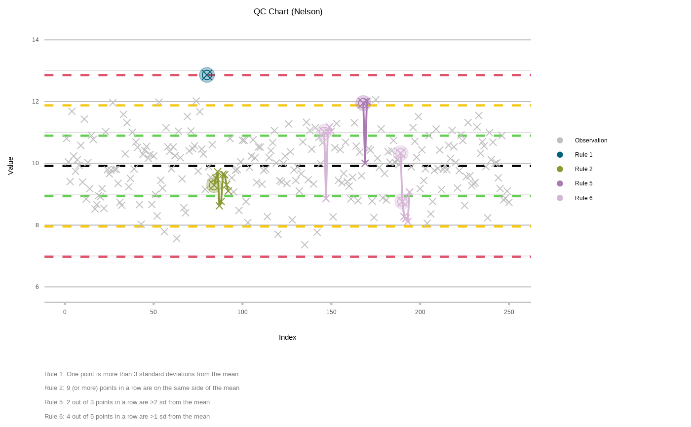
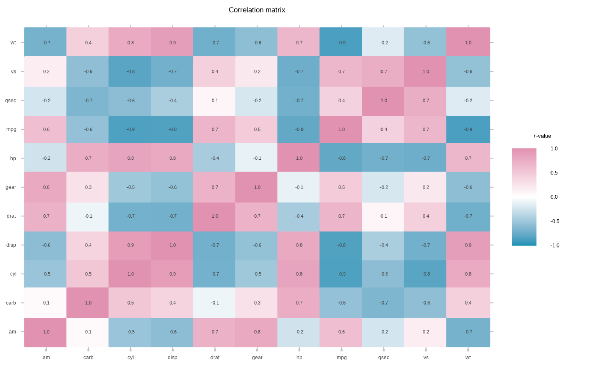

The plot2() function is a convenient wrapper around many ggplot2 functions. By design, the ggplot2 package requires users to use a lot of functions, while the plot2() function auto-determines needs and only requires to define arguments in one single function.
See plot2-methods for all implemented methods for different object classes.
plot2( .data, x = NULL, y = NULL, category = NULL, facet = NULL, type = NULL, x.title = NULL, y.title = NULL, title = NULL, subtitle = NULL, caption = NULL, tag = NULL, title.linelength = 60, title.colour = "black", subtitle.linelength = 60, subtitle.colour = "grey35", na.replace = "(??)", na.rm = FALSE, facet.position = "top", facet.fill = NULL, facet.bold = TRUE, facet.italic = FALSE, facet.size = 10, facet.margin = 8, facet.repeat_lbls_x = TRUE, facet.repeat_lbls_y = FALSE, facet.fixed_y = FALSE, facet.drop = FALSE, facet.nrow = NULL, facet.relative = FALSE, x.date_breaks = NULL, x.date_labels = NULL, category.focus = NULL, colour = "certe", colour_fill = NULL, x.lbl_angle = 0, x.lbl_align = NULL, x.lbl_italic = FALSE, x.remove = FALSE, x.position = "bottom", x.max_items = Inf, x.max_txt = "(rest, x %n)", category.max_items = Inf, category.max_txt = "(rest, x %n)", facet.max_items = Inf, facet.max_txt = "(rest, x %n)", x.breaks = NULL, x.breaks_n = NULL, x.trans = "identity", x.expand = 0.5, x.limits = NULL, x.character = NULL, y.remove = FALSE, y.24h = FALSE, y.age = FALSE, y.percent = FALSE, y.percent_break = 0.1, y.breaks = NULL, y.limits = NULL, y.labels = NULL, y.expand = 0.25, y.trans = "identity", y.position = "left", category.labels = NULL, category.percent = FALSE, category.breaks = NULL, category.limits = NULL, category.expand = 0, category.midpoint = NULL, category.trans = "identity", x.sort = NULL, category.sort = TRUE, facet.sort = TRUE, datalabels = TRUE, datalabels.round = ifelse(y.percent, 2, 1), datalabels.format = "%n", datalabels.colour = "grey25", datalabels.fill = NULL, datalabels.size = (3 * text_factor), datalabels.angle = 0, decimal.mark = ",", big.mark = ifelse(decimal.mark == ",", ".", ","), summarise_function = base::sum, stacked = FALSE, stackedpercent = FALSE, horizontal = FALSE, reverse = horizontal, smooth = NULL, smooth.method = NULL, smooth.formula = NULL, smooth.se = TRUE, smooth.level = 0.95, smooth.alpha = 0.15, smooth.size = 0.75, smooth.linetype = 3, size = NULL, linetype = 1, binwidth = NULL, width = NULL, jitter_seed = NA, violin_scale = "count", legend.position = "top", legend.title = NULL, legend.reverse = FALSE, legend.barheight = 6, legend.barwidth = 1.5, legend.nbin = 300, legend.italic = FALSE, zoom = FALSE, sep = "/", print = FALSE, text_factor = 1, family = "Calibri", theme = theme_minimal2(), markdown = TRUE, taxonomy_italic = markdown, x.category = NULL, y.category = NULL, ... )
Arguments
| .data | data to plot |
|---|---|
| x | plotting 'direction': the x axis |
| y | values to use for plotting along the y axis |
| category | plotting 'direction': the category (called 'fill' and 'colour' in |
| facet | plotting 'direction': the facet |
| type | type of visualisation to use. This can be:
|
| x.title | text to show on the x axis |
| y.title | text to show on the y axis |
| title | title to show |
| subtitle | subtitle to show |
| caption | caption to show |
| tag | tag to show |
| title.linelength | maximum number of characters per line in the title, before a linebreak occurs |
| title.colour | text colour of the title |
| subtitle.linelength | maximum number of characters per line in the subtitle, before a linebreak occurs |
| subtitle.colour | text colour of the subtitle |
| na.replace | character to put in place of |
| na.rm | remove |
| facet.position, facet.fill, facet.bold, facet.italic, facet.size, facet.margin, facet.repeat_lbls_x, facet.repeat_lbls_y, facet.fixed_y, facet.drop, facet.nrow, facet.relative | settings for the plotting direction |
| x.date_breaks | breaks to use when the x axis contains dates, will be determined automatically if left blank |
| x.date_labels | labels to use when the x axis contains dates, will be determined automatically if left blank |
| category.focus | a value of |
| colour | colour(s) to set, will be evaluated with |
| colour_fill | colour(s) to be used for filling, will be determined automatically if left blank and will be evaluated with |
| x.lbl_angle | angle to use for the x axis in a counter-clockwise direction (i.e., a value of |
| x.lbl_align | alignment for the x axis between |
| x.lbl_italic | a logical to indicate whether the x labels should in in italics |
| x.remove | a logical to indicate whether the x labels and title should be removed |
| x.position | position of the x axis, defaults to |
| x.max_items, category.max_items, facet.max_items | number of maximum items to use, defaults to infinite. All other values will be grouped and summarised using the |
| x.max_txt, category.max_txt, facet.max_txt | the text to use of values not included number of |
| x.breaks | a breaks function or numeric vector to use for the x axis |
| x.breaks_n | number of breaks to use for the x axis |
| x.trans | a transformation function to use for the x axis, e.g. |
| x.expand | expansion to use for the x axis, can be length 1 or 2 |
| x.limits | limits to use for the x axis, can be length 1 or 2 |
| x.character | a logical to indicate whether the values of the x axis should be forced to character. The default is |
| y.remove | a logical to indicate whether the y labels and title should be removed |
| y.24h | a logical to indicate whether the y labels and breaks should be formatted as 24-hour sequences |
| y.age | a logical to indicate whether the y labels and breaks should be formatted as ages in years |
| y.percent | a logical to indicate whether the y labels should be formatted as percentages |
| y.percent_break | number of percentages on which the y axis should have breaks |
| y.breaks | a breaks function or numeric vector to use for the y axis |
| y.limits | limits to use for the y axis, can be length 1 or 2 |
| y.labels | a labels function or character vector to use for the y axis |
| y.expand | expansion to use for the y axis, can be length 1 or 2 |
| y.trans | a transformation function to use for the y axis, e.g. |
| y.position | position of the x axis, defaults to |
| category.labels, category.percent, category.breaks, category.limits, category.expand, category.midpoint, category.trans | settings for the plotting direction |
| x.sort, category.sort, facet.sort | sorting of the plotting direction, defaults to
|
| datalabels | variables or character vector to use as datalabels - if left blank, will take the first character column in 'sf' plots, and values of |
| datalabels.round | number of digits to round the datalabels |
| datalabels.format | format to use for datalabels - |
| datalabels.colour, datalabels.fill, datalabels.size, datalabels.angle | settings for the datalabels |
| decimal.mark | decimal mark, defaults to Dutch use (a comma) |
| big.mark | thousands separator, defaults to Dutch use (a full stop) |
| summarise_function | a function to use if the data has to be summarised, see Examples |
| stacked | text |
| stackedpercent | text |
| horizontal | a logical to turn the plot 90 defrees using |
| reverse | a logical to reverse all values on the x axis |
| smooth | a logical to add a smooth. In histograms, this will add the density count as an overlaying line (default: |
| smooth.method, smooth.formula, smooth.se, smooth.level, smooth.alpha, smooth.size, smooth.linetype | settings for |
| size | size of the geom |
| linetype | linetype of the geom, only suitable for geoms that draw lines |
| binwidth | width of bins (only useful for |
| width | width of the geom |
| jitter_seed | seed (randomisation factor) to be set when using |
| violin_scale | scale to be set when using |
| legend.position, legend.title, legend.reverse, legend.barheight, legend.barwidth, legend.nbin, legend.italic | settings for the legend |
| zoom | a logical to indicate if the plot should be scaled to the data, i.e., not having the x and y axes to start at 0 |
| sep | separator character to use if multiple columns are given to either of the three directions: |
a logical to indicate if the result should be printed instead of just returned |
|
| text_factor | text factor to use, which will apply to all texts shown in the plot |
| family | font family to use |
| theme | a valid |
| markdown | a logical to turn all labels and titles into markdown-supported labels, by extending their S3 classes with |
| taxonomy_italic | a logical to transform all labels and titles into italics that are in the |
| x.category | old argument for |
| y.category | old argument for |
| ... | arguments passed on to methods |
Value
The plot2() function adds new variables to the data for each mapping: any combination of _var_x, _var_y, _var_category, _var_facet. These columns are internally set as mapping with aes().
Details
The plot2() function is a convenient wrapper around many ggplot2 functions such as ggplot(), aes(), geom_col(), facet_wrap(), labs(), etc., and provides:
Writing as few lines of codes as possible
Easy plotting in three 'directions':
x(the regular x axis),category(replaces 'fill' and 'colour') andfacetAutomatic setting of these 'directions' based on the input data
Easy way for sorting data in many ways (such as on alphabet, numeric value, frequency, original data order), by setting a single argument for the 'direction':
x.sort,category.sortandfacet.sortEasy limiting values, e.g. by setting
x.max_items = 5orcategory.max_items = 5Markdown support for any label, with any theme
An extra clean, minimalistic theme with a lot of whitespace (but without unnecessary margins) that is ideal for printing:
theme_minimal2()Some conveniences from Microsoft Excel:
The y axis starts at 0 if possible
The y scale expands at the top to be better able to interpret all data points
Date breaks can be written in a human-readable format (such as "d mmm yyyy")
Labels with data values can easily be printed and are automatically determined
Support for any
ggplot2extension based onggplot2::fortify()
The ggplot2 package in conjunction with the tidyr, forcats and cleaner packages can provide above functionalities, but the goal of the plot2() function is to generalise this into one function. For data.frames, plot2() currently has 118 arguments, all with a default value. Less typing, faster coding.
Examples
head(iris) #> Sepal.Length Sepal.Width Petal.Length Petal.Width Species #> 1 5.1 3.5 1.4 0.2 setosa #> 2 4.9 3.0 1.4 0.2 setosa #> 3 4.7 3.2 1.3 0.2 setosa #> 4 4.6 3.1 1.5 0.2 setosa #> 5 5.0 3.6 1.4 0.2 setosa #> 6 5.4 3.9 1.7 0.4 setosa # no variables determined, so plot2() will try for itself - # the type will be points since the first two variables are numeric plot2(iris) #> i Using x = Sepal.Length #> i Using y = Sepal.Width #> i Using category = Species #> i Assuming x.character = TRUE for discrete plot type () since Sepal.Length is numeric #> i Using type = "col" as default# only view the data part, like ggplot2 normally does plot2(iris, zoom = TRUE) #> i Using x = Sepal.Length #> i Using y = Sepal.Width #> i Using category = Species #> i Assuming x.character = TRUE for discrete plot type () since Sepal.Length is numeric #> i Using type = "col" as default
# if x and y are set, no addition mapping will be set: plot2(iris, Sepal.Width, Sepal.Length) #> i Assuming x.character = TRUE for discrete plot type () since Sepal.Width is numeric #> i Using type = "col" as default #> Warning: Removed 6 rows containing missing values (geom_bar).
plot2(iris, Species, Sepal.Length) #> i Using type = "boxplot" since all groups have size >= 3
# the arguments are in this order: x, y, category, facet plot2(iris, Sepal.Length, Sepal.Width, Petal.Length, Species) #> i Assuming x.character = TRUE for discrete plot type () since Sepal.Length is numeric #> i Using type = "col" as default #> Warning: Missing 7 colours, filling with random light greys #> Warning: Missing 7 colours, filling with random light greys
plot2(iris, Sepal.Length, Sepal.Width, Petal.Length, Species, colour = "viridis") # set the viridis colours #> i Assuming x.character = TRUE for discrete plot type () since Sepal.Length is numeric #> i Using type = "col" as default
plot2(iris, Sepal.Length, Sepal.Width, Petal.Length, Species, colour = c("white", "red", "black")) # set own colours #> i Assuming x.character = TRUE for discrete plot type () since Sepal.Length is numeric #> i Using type = "col" as default
plot2(iris, Sepal.Length, Sepal.Width, Petal.Length, Species, colour = c("white", "red", "black"), # set own colours category.midpoint = 3) # with an own midpoint #> i Assuming x.character = TRUE for discrete plot type () since Sepal.Length is numeric #> i Using type = "col" as default
# change to any type plot2(iris, Species, Sepal.Length, type = "violin")
library(dplyr, warn.conflicts = FALSE) head(admitted_patients) #> # A tibble: 6 × 6 #> date gender age age_group hospital ward #> <date> <chr> <dbl> <ord> <fct> <chr> #> 1 2002-02-18 M 82 75+ B Non-ICU #> 2 2002-02-21 M 64 55-74 D Non-ICU #> 3 2002-02-24 M 0 0-11 C Non-ICU #> 4 2002-04-14 M 73 55-74 C Non-ICU #> 5 2002-04-14 M 72 55-74 C Non-ICU #> 6 2002-04-26 M 79 75+ D Non-ICU # if there are more Y values than groups, the default will be boxplot admitted_patients %>% plot2(x = hospital) #> i Using y = age #> i Using type = "boxplot" since all groups have size >= 3
# the arguments are in this order: x, y, category, facet admitted_patients %>% plot2(hospital, age, gender) #> i Using type = "boxplot" since all groups have size >= 3
admitted_patients %>% plot2(hospital, age, gender, ward) #> i Using type = "boxplot" since all groups have size >= 3
# use summarise_function to apply a function for continuous data admitted_patients %>% plot2(hospital, age, gender, ward, type = "col", summarise_function = median)
admitted_patients %>% plot2(x = hospital, category = gender, colour = c("F" = "orange3", "M" = "purple3"), colour_fill = "white", y.age = TRUE) #> i Using y = age #> i Using type = "boxplot" since all groups have size >= 3
admitted_patients %>% plot2(age, type = "hist") #> i Using binwidth = 6.4 based on data #> i Assuming smooth = TRUE for type = "histogram"
admitted_patients %>% plot2(age, type = "density")
# the default type is column, datalabels are automatically # set in non-continuous types: patients_per_hospital_gender <- admitted_patients %>% count(hospital, gender) head(patients_per_hospital_gender) #> # A tibble: 6 × 3 #> hospital gender n #> <fct> <chr> <int> #> 1 A F 12 #> 2 A M 15 #> 3 B F 39 #> 4 B M 40 #> 5 C F 36 #> 6 C M 34 patients_per_hospital_gender %>% plot2() #> i Using y = n #> i Using x = hospital #> i Using category = gender #> i Using type = "col" as default
patients_per_hospital_gender %>% plot2(stacked = TRUE) #> i Using y = n #> i Using x = hospital #> i Using category = gender #> i Using type = "col" as default
patients_per_hospital_gender %>% plot2(stackedpercent = TRUE) #> i Using y = n #> i Using x = hospital #> i Using category = gender #> i Using type = "col" as default
# sort any direction patients_per_hospital_gender %>% plot2(category.sort = "desc") #> i Using y = n #> i Using x = hospital #> i Using category = gender #> i Using type = "col" as default
patients_per_hospital_gender %>% plot2(category.sort = "desc", x.sort = "freq-asc", stacked = TRUE) #> i Using y = n #> i Using x = hospital #> i Using category = gender #> i Using type = "col" as default
# plot2() supports all S3 extensions available through ggplot2::fortify(): mtcars %>% lm(mpg ~ hp, data = .) %>% plot2(x = mpg ^ 2, y = hp ^ 3, smooth = TRUE, title = "Titles/captions *support* **markdown**", subtitle = "Axis titles contain the square notation: ^2") #> i Assuming x.character = TRUE for discrete plot type () since mpg^2 is numeric #> i Using type = "col" as default #> `geom_smooth()` using method = 'loess' and formula 'y ~ x'
# sf objects (geographic plots, 'simple features') are also supported if (require("sf")) { netherlands %>% plot2(datalabels = TRUE) } #> Loading required package: sf #> Linking to GEOS 3.8.0, GDAL 3.0.4, PROJ 6.3.1 #> i Using category = area_km2 #> i Using datalabels = province  # Antimicrobial Resistance (AMR) data analysis requires the `AMR` package: if (require("AMR")) { example_isolates %>% select(mo, penicillins()) %>% bug_drug_combinations(FUN = mo_gramstain) %>% plot2() } #> Loading required package: AMR #> ℹ For `penicillins()` using columns 'PEN' (benzylpenicillin), 'OXA' #> (oxacillin), 'FLC' (flucloxacillin), 'AMX' (amoxicillin), 'AMC' #> (amoxicillin/clavulanic acid), 'AMP' (ampicillin) and 'TZP' #> (piperacillin/tazobactam) #> ℹ Using column 'mo' as input for `col_mo`. 